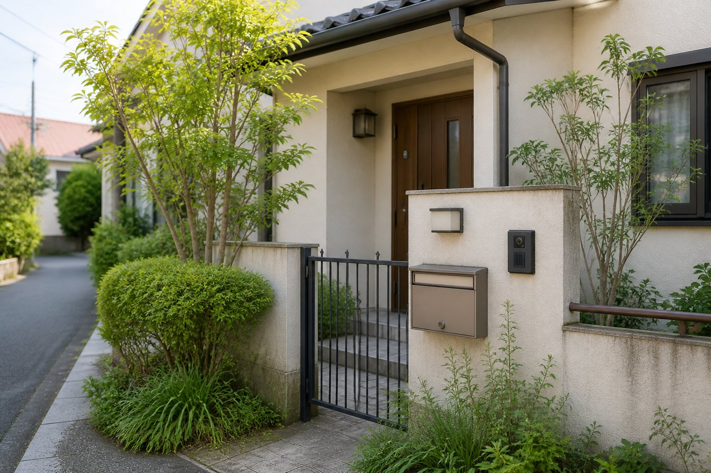

見守り
- 親御様の様子確認
- ご家族への報告
- 必要に応じた相談先の整理
高齢者とご家族の安心相談窓口
暮らしと住まいの相談員：井口 大成
三鷹市周辺で、離れて暮らす親御様や空き家・ご実家のことを、まず相談できる地域の窓口です。
受付時間：9:00〜18:00
お手紙・名刺をご覧になった方へ
まずは状況を整理するところから。
この窓口を始めたきっかけ
きっかけは、母のその一言でした。
スマホの使い方、地域通貨の操作、電球交換、家具の移動、家のちょっとした不具合。本人にとっては毎日の困りごとでも、家族にはなかなか言い出しにくいことがあります。
だからこそ、家族の代わりに叱る人ではなく、まず話を聞いて、状況を一緒に整理する地域の相談窓口が必要だと感じました。
手紙や名刺でこの窓口を知った方へ。離れて暮らす親御様のこと、ご実家や住まいのことを、三鷹市周辺で相談できる身近な入口としてご案内しています。
すぐに結論を出すための場所ではありません。まずお話を伺い、必要な確認や次に相談すべき先を一緒に整理します。
相談のきっかけ
できること
空き家・実家の確認
遠方にお住まいの場合、空き家やご実家の状況を確認するだけでも大きな負担になります。
外壁、屋根、郵便物、庭まわり、近隣への影響など、現地に近い立場で確認し、写真やメモでご報告します。
必要に応じて、専門業者、士業、行政窓口へ相談するための整理もお手伝いします。
ご注意ください。
雑草や植木、郵便物、インターホン、照明など、外まわりの小さな状態から、高齢者だけの住宅や留守がちな家だと分かってしまうことがあります。訪問販売や空き巣などのリスクを避けるためにも、定期的な確認が大切です。
外観や庭まわりを定期的に確認し、必要に応じて防犯面の気づきもご家族へお知らせします。

相続・住まいの入口相談
相続や生前対策は、専門家へ相談する前に、家族の状況や住まいの今後を整理しておくと話が進めやすくなります。
上級相続診断士®として、専門判断の前段階で、何を確認し、誰に相談すべきかを整理します。
法律・税務の専門判断が必要な場合は、司法書士、税理士、行政書士などの専門家へおつなぎします。
相談員について
三鷹市周辺で、高齢者とご家族の安心相談窓口として活動しています。
相続や生前対策だけでなく、離れて暮らす親御様の見守り、空き家やご実家の管理、住まいのお困りごと、家族会議の進行役など、高齢者とご家族の安心につながる活動を行っています。
地域活動・資格
補足資格：食品衛生責任者。電気まわりのご相談は、第二種電気工事士として確認できる範囲を踏まえ、必要に応じて専門業者へおつなぎします。
費用
| 内容 | 料金 |
|---|---|
| ちょこっとお手伝い | 20分 2,000円 |
| 通常のご相談・お手伝い | 内容により事前確認 |
| 網戸・障子などの交換 | 作業料＋実費 |
| 空き家の見回り | 内容によりお見積り |
| 定期管理 | 別途お見積り |
| 専門業者が必要な作業 | 内容確認のうえ専門先をご案内 |
※三鷹市内は交通費をいただいていません。市外の場合や材料費などの実費が発生する場合は事前にお伝えします。作業内容・料金・実費が事前に判断できるものは、作業前に書面またはメッセージでご提出します。法律・税務の専門判断は専門家へおつなぎします。
進め方
よくある質問
はい。まずは状況を整理するだけでも構いません。
はい。三鷹市周辺の現地確認や写真報告も可能です。
はい。まずは現地の状態やご家族の考えを整理し、必要な選択肢を一緒に確認します。
入口相談として内容を整理し、専門判断が必要な場合は士業の方へおつなぎします。
いいえ。パスワード、暗証番号、金融情報はお預かりしません。
行政手続きの代行ではなく、相談先や確認事項の整理をお手伝いします。手続きの内容に応じて、行政窓口や専門家へつなぎます。
内容を確認したうえで対応します。材料費などの実費が必要な場合は、作業前に書面またはメッセージでお伝えします。
大切なお約束
お問い合わせ
受付時間：9:00〜18:00
フォームURLは後から差し替えできます。予定項目：お名前、電話番号、メールアドレス、ご相談内容、対象地域、相談したい内容。